If you're wondering what your zodiac sign is, see where your birthday falls in the 12 zodiac sign dates below. If you happened to be born on a day when the sun switches from one astrology sign to another — called a cusp — you'll need your birth time to pinpoint your sun sign.
Aries ♈️ (March 21 - April 19)
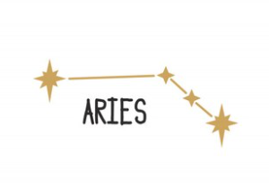
Symbol:The Ram
Ruling Planet:Mars
Ruling Planet:First House of Self
Key Traits:Competitive, energetic, impulsive, fearless
The cardinal fire sign is known for being dynamic, athletic, and having an insatiable appetite for winning. For this reason, they take great pride in being early adopters of anything and everything from the hottest new sneaker drop to the latest iPhone. And they pretty much live to compete and argue. Ram people tend to have the makings of a pro athlete, trend-setting influencer, or lawyer (former prosecutor and now Vice President Kamala Harris was born with her moon in Aries).
Taurus ♉️: April 20 - May 20
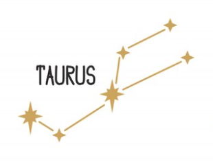
Symbol:The Bull
Ruling Planet:Venus
Ruling Planet:Second House of Income
Key Traits:Resolute, grounded, tenacious, sensual
The fixed earth sign has quite a reputation for being the most stubborn one of the zodiac, but remember, there are fixed signs in each element! Thanks to their Venusian influence, Taureans are actually fairly chill. They're known for loving luxury and indulgence, being super-loyal, and enjoying art (whether they create or just appreciate it). (Sound a bit like Ariana Grande? Although her sun is in Cancer, her Venus is in sweet Taurus.) They tend to adore spa days and sweets. They're known for taking their time — whether that means having a really long fuse to get fired up, dragging their feet to take action, or being lazy and languorous when it comes to intimacy.
Gemini ♊️ (May 21 - June 20)
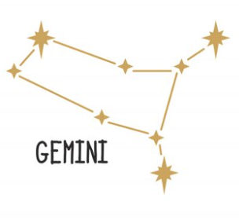
Symbol: The Twins
Ruling Planet: Mercury
Ruling House: Third House of Communication
Key Traits: Witty, curious, charming, flighty
The word "mercurial" might have very well been created for Gemini, the mutable air sign that lives for communication in all forms. They're lovers of sharing whatever is on their mind, whenever, however. (Amy Schumer's sun and Venus are in the loquacious air sign.) Although, don't assume they're always outgoing. They can be reserved and shy one minute and incredibly chatty the next. Given their innate mastery of language and social skills, they tend to have a wide, diverse circle of friends and gravitate to career paths that allow them to express themselves and utilize their super-buzzy brains (think: marketing/PR, politics, publishing).
Cancer ♋️ (June 21 - July 22)
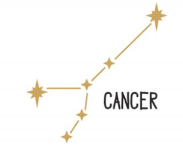
Symbol: The Crab
Ruling Planet: Moon
Ruling House: Fourth House of Home Life
Key Traits: Compassionate, giving, sentimental, nurturing
The cardinal water sign, influenced by the shimmering maternal moon, is one of the greatest dreamers and do-ers of the zodiac. As the ruler of the Fourth House, which deals with family and home life, they're homebodies who prioritize their connections with loved ones and achieving a lasting sense of security. But their crabbiness absolutely will come into play when they're frustrated, feel put upon, or are otherwise catapulted into a moody headspace. They'll go into their self-protective "shells," requiring time away from others to take care of themselves before they can get back to taking care of everyone else. (Mindy Kaling has a stellium — her sun, moon, and Mercury — in the endearing water sign.)
Leo ♌️ (July 23 - August 22)
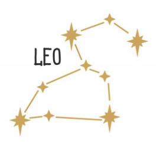
Symbol: The Lion
Ruling Planet: Sun
Ruling House: Fifth House of Romance and Self-Expression
Key Traits: Charismatic, generous, optimistic, dramatic
The fixed fire sign is ruled by the confident sun, which informs their positive, cheerful, gung-ho vibe. Driven and self-assured leaders, they tend to be oriented toward taking action in life, and they're born feeling like they can accomplish their wildest dreams thanks to a glimmery combo of magnetism, luck, and endlessly believing in themselves. (Former President Barack Obama's sun and Mercury are in the charismatic fire sign.) Although they might struggle to step out of being self-focused, they can be extremely loyal, devoted, and adore showering their loved ones in playful energy and all of life's finest things.
Virgo ♍️ (August 23 - September 22)
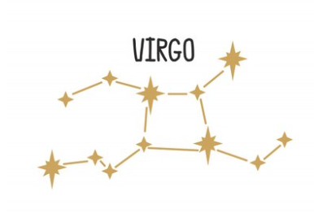
Symbol: The Virgin or Maiden
Ruling Planet: Mercury
Ruling House: Sixth House of Wellness and Daily Routine
Key Traits: Health-conscious, analytical, service-oriented, detail-focused
The mutable earth sign might very well be mistaken as an air sign given the influence of Mercury, which means their minds are pretty much going nonstop. Lovers of lists, spreadsheets, and blank journals, Virgos are the go-to researchers, stand-out organizers, and pretty much A students of the zodiac. They're also perfectionists who adore working hard to make the end result of any pursuit "just right" — whether that's a recipe, a professional project, or search for a partner. (Or in the case of Beyonce, whose sun is in the earth sign, the entertainment and art we can't get enough of.) Speaking of partners and loved ones, they'll often bend themselves into knots to help and be of service to their nearest and dearest.
Libra ♎️ (September 23 - October 22)
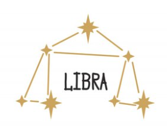
Symbol: The Scales
Ruling Planet: Venus
Ruling House: Seventh House of Partnership
Key Traits: Romantic, artistic, indecisive, diplomatic
The cardinal air sign was born to bring balance, harmony, and justice to their work and relationships. Given their Venusian influence, they're lovers of art and beauty who are known for being social butterflies and the ultimate hosts. And as the ruler of the Seventh House of Partnership, they prioritize one-on-one bonds, especially of the romantic variety. But although they tend to be interested in achieving serenity at all costs and connecting with a wide range of people, they're not sheep. They're go-getters (Serena Williams is one!) who will stand up for what they believe in, dreaming big and putting in the time and energy to ensure a fair result.
Scorpio ♏️ (October 23 - November 21)
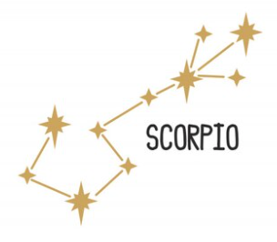
Symbol: The Scorpion
Ruling Planets: Pluto and Mars
Ruling House: Eighth House of Emotional Bonds and Sexual Intimacy
Key Traits: Mysterious, magnetic, power-seeking, spiritual
The fixed water sign is known for being one of — if not the — most private sign in the zodiac. Co-ruled by transformative Pluto and go-getter Mars, they're able to command people's attention with their intense, powerful presence and air of mystery. They're also very much in touch with their spirituality and sexuality, but they hold their cards close to their chest. (Fiercely private family man Ryan Gosling has his sun and Mercury in the water sign.) Even after being in a relationship (platonic, romantic, or business-related) with a Scorpio for years, you might not know the whole story behind their emotional wounds and at times rough-around-the-edges tone. But once they're in any kind of emotional entanglement, the resolute, razor-focused sign is in it.
Sagittarius ♐️ (November 22 - December 21)
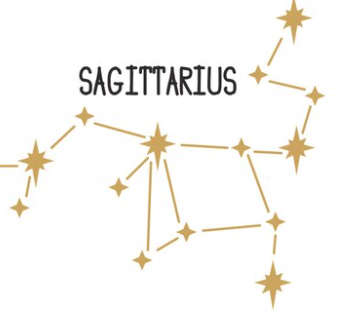
Symbol: The Archer
Ruling Planet: Jupiter
Ruling House: Ninth House of Adventure and Higher Learning
Key Traits: Philosophical, free-spirited, unfiltered, wanderlusting
Ruled by fortunate Jupiter, which brings a magnifying effect to everything it touches, Sagittarians are big, life-loving personalities who adore globe-trotting, being at the heart of any party, and exploring as much as life has to offer. They're also born philosophers who are endlessly passionate about their beliefs and have a tendency to hop on a soapbox frequently in order to share their world view, often in a way that pulls no punches. (President Biden has his ascendant in Sag, which is why he's known for his no-nonsense rhetoric. "Folks!") They're natural born comedians, entertainers, politicians, and/or generally gravitate to career paths that allow for lots of travel.
Capricorn ♑️ (December 22 - January 19)
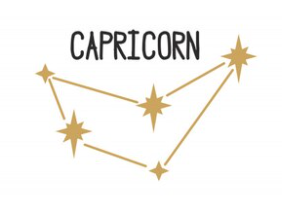
Symbol: The Goat
Ruling Planet: Saturn
Ruling House: Tenth House of Career and Public Image
Key Traits: Traditional, down-to-earth, industrious, disciplined
If you want someone who's perpetually motivated to achieve on your team, you're going to want to tap someone whose chart includes the cardinal earth sign Capricorn. People born with Cap are on a lifelong climb up a series of increasingly steep mountains, as they're driven to put their noses to the grindstone, succeed, and earn recognition for their diligent, no-nonsense work. In fact, it's for this reason that they have a rep for being workaholics. But they're also extremely loyal, often exhibit a gut-busting hilarious dry sense of humor, and ability to show you exactly what's possible when you commit to a pragmatic, steady, grounded approach. John Legend is a perfect example of an industrious double Cap (it's his sun and his rising/ascendant sign).
Aquarius ♒️ (January 20 - February 18)
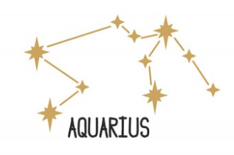
Symbol: The Water Bearer
Ruling Planet: Uranus
Ruling House: Eleventh House of Networking
Key Traits: Humanitarian, eccentric, individualistic, cool
The fixed air sign is making plenty of headlines as we head into what's been coined the "Age of Aquarius." Quirky, generally progressive, skeptical, and social (albeit in a cool, aloof, friends-with-everyone way), those with the Water Bearer's influence in their charts are wired to prioritize "we" over "me," gravitating to causes and activities that hold the greater good of society as a whole in mind. (Look no further than Alicia Keys, who has a stellium, meaning three or more signs, in Aquarius: her sun, Mercury, and Mars.) They gravitate to more platonic relationships than deeply intimate entanglements and might even opt for non-traditional arrangements, as they love to strike out against convention whenever possible. And given electric Uranus' involvement, they're tech-savvy and science-minded.
Pisces ♓️ (February 19 - March 20)
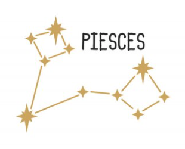
Symbol: The Fish
Ruling Planets: Neptune
Ruling House: Twelfth House of Spirituality
Key Traits: Empathic, artistic, psychic, dreamy
Imagine not only being super-tuned into your own feelings but also being wired to pick up on and take on everyone else's emotions. Now you're in the headspace of a person who has the significant presence of mutable water sign Pisces in their chart. Incredibly sensitive and intuitive, they are the healers, the hopeless romantics, the artists, and the escapists of the zodiac. While they have an instinct to get swept up in otherworldly daydreams to get away from any emotional pain, the healthiest way for them to channel these deeply-felt emotions is through creative outlets like theater, music, or poetry. (The late opera-loving RBG's sun and Venus were in the water sign.) And thanks to their Neptune influence, they have keen imaginations and tend to be up for exploring all things related to spirituality, the metaphysical, and psychology.